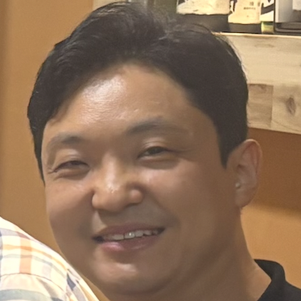

About the Workshop
Bridging the gap between technical capabilities and user expectations in social robotics.
With social robots increasingly present in homes, hospitals, schools, and public spaces, there remains a crucial gap between current technical capabilities and user expectations. This half-day workshop, "Social Robots Unboxed," aims to assemble leading researchers, industry experts, and end-users to explore state-of-the-art social robot products, debate their applications, and chart a human-centric roadmap for future development.
Despite impressive technical progress in perception, dialogue, and mobility, many questions remain: What functionalities do end-users truly value? Which ethical and privacy concerns must we address? How can academia, industry, and user communities collaborate effectively?
Workshop Objectives
- Survey the State of the Art: Showcase current social robot products and services.
- Envision Future Applications: Gather diverse perspectives on roles for social robots.
- Foster Collaboration: Provide a forum for networking and identifying partnerships.
- Capture User Wishes: Generate a feature "Wish List" to guide next-gen robot design.
Key Topics
Our discussions will revolve around the critical challenges and opportunities in social robotics.
Commercial Products & Services
Analyzing capabilities, market readiness, and applications in healthcare, education, and hospitality.
Core Functions
Exploring advances in speech, emotion recognition, and non-verbal behaviors.
Ethics & Privacy
Addressing data policies, consent mechanisms, and cultural adaptation.
Design & UX
Focusing on embodiment, personalization, and long-term adaptability.
Deployment Challenges
Tackling issues of scalability, reliability, and cost-effectiveness.
User Acceptance
Investigating trust, engagement, and the factors driving long-term impact.
Invited Speakers
Hear from leading experts at the forefront of social robotics research and industry.
Ross Mead, PhD
CEO, Semio
Founder and CEO of Semio AI, defining how people will live, work, and play with robots.
Yunsung Kim
Principal Researcher, LG Electronics
Engaged in designing robot platform architecture and SDKs based on ROS 2 for devices like the LG Q9.

Kyungman Yu
Principal Researcher, LG Electronics
Co-developer of the LG AI Companion Device (Q9) platform and SDKs.
Sonya Kwak, PhD
Senior Research Scientist, KIST
Focuses on HRI design of social robots and robotic products, co-creator of CollaBot.
Franziska Kirstein
Research And Development Specialist, Blue Ocean Robotics
An expert in Human-Robot Interaction, focusing on user-centered design and commercialization of service robots.
Kang Young Lee
Principal Researcher, LG Electronics
Co-developer of the LG AI Companion Device (Q9) platform and SDKs.
Program
Our half-day workshop will feature invited talks, an in-depth product demonstration, and a lively panel discussion.
Workshop Timetable
| Time (CEST) | Session | Duration |
|---|---|---|
| 14:30 - 14:35 | Welcome Remark | 5 minutes |
| 14:35 - 15:05 | Invited Talk 1: "Designing Robots for Everyday Life" by Sonya Kwak | 30 minutes |
| 15:05 - 15:35 | Invited Talk 2: "Co-Creating Robots for Everyday Use" by Franziska Kirstein | 30 minutes |
| 15:35 - 16:00 | coffee break | 25 minutes |
| 16:00 - 16:30 | Invited Talk 3: "Bringing Robots To Life: Building Blocks of Social Interaction" by Ross Mead | 30 minutes |
| 16:30 - 17:30 | In-Depth Robot Demo Session by Yunsung Kim, Kang Young Lee, Kyungman Yu | 60 minutes |
| 17:30 - 18:00 | Panel Discussion | 30 minutes |
All times are listed in Central European Summer Time (CEST).
Invited Talk Session
Ross Mead, PhD
CEO, Semio
Bringing Robots To Life: Building Blocks of Social Interaction
In this talk, Dr. Ross Mead will introduce categories of social behaviors that serve as building blocks for face-to-face social interactions, and how these behaviors can be computationally modeled for autonomous social robots.
Sonya Kwak, PhD
Senior Research Scientist, KIST
Designing Robots for Everyday Life
This presentation introduces two complementary approaches to designing robots that meet human needs: human-centered human–robot interaction (HRI) and the robotization of everyday products. The first part presents research cases applying theories from social psychology to create robots that users can intuitively understand and interact with. The second part outlines methods for developing robotic products by embedding robotic technologies into conventional objects, illustrated through case studies including HangulBot, a block-shaped edutainment robot for learning the Korean alphabet; CollaBot, a robotic library system enabling collaborative HRI among robotic products; PopupBot, an origami-based transformable robotic space; and oOoBot, a modular robotic furniture system designed for efficient use of limited space.
Franziska Kirstein
Research And Development Specialist, Blue Ocean Robotics
Co-Creating Robots for Everyday Use
When robots leave the lab and enter hospitals, workplaces, or homes, their success depends not only on what they can do, but on how people experience living and working alongside them over time. This talk will share insights from the development of the UVD Robot and PTR Robot at Blue Ocean Robotics, highlighting how design decisions and co-creation with end-users—through field studies, on-site problem identification, and scenario analysis—shape user experience and sustained adoption. By looking beyond technical performance and focusing on human needs and everyday situations, we can better support a seamless integration of robots into daily workflows.
In-depth Social Robot Demonstration Session
Robot Software Platform, Development Ecosystem, and SDK Use Cases of LG Electronics’ AI Companion Device (Q9)
At CES, IFA, and ROSCon 2024, LG Electronics unveiled its AI Companion Device (Q9) as part of its vision to enhance the value of life through the liberation from household labor—“Zero Labor Home, Makes Quality Time.” Q9 is designed as an open platform based on ROS 2, enabling external developers to freely integrate their own software functionalities into the device via standardized interfaces.
This session is composed of three presentations, focusing on practical methods and real-world examples of how social robotics developers can extend and apply functionalities using the Q9 platform.
Yunsung Kim
Principal Researcher, LG Electronics
Q9 Architecture and Development Ecosystem
Q9 is a ROS 2-based open platform optimized for stable operation even on low-spec hardware. This session introduces the structure of the Q9 robot software platform, along with the SDK and development ecosystem that allow external developers to integrate their own software modules into the Q9 device.
Kang Young Lee
Principal Researcher, LG Electronics
SDK and Developer Site Configuration and Utilization
LG Electronics has released an SDK that supports various ROS 2 APIs. The SDK consists of a toolchain, documentation, open APIs, sample code, tutorials, and a developer site, allowing developers to easily implement their own functionality on the Q9 platform. This session provides a detailed overview of the SDK’s structure, usage process, and how to effectively utilize the developer site.
Kyungman Yu
Principal Researcher, LG Electronics
SDK API Features and Application Use Cases
This session demonstrates how developers can leverage the SDK to add custom software features or applications beyond the device’s built-in capabilities. Since the SDK’s release, LG Electronics has collaborated with various domestic and international institutions to develop new functionalities. Real-world collaboration cases and application development examples will be shared.
Panel Discussion: The Future of Social Robots
Let's Get Fired Up!
Join us for a dynamic and open panel discussion where all participants are encouraged to share their bold ideas. We will delve into the critical questions facing our field: Why have past social robots failed to meet expectations? What must be done to create truly successful and impactful products?
This is a space for confident, and even controversial, ideas. Let's challenge assumptions and collectively chart a new course for the future of social robotics.
Organizers
Meet the team behind the "Social Robots Unboxed" workshop.
Minsu Jang (Co-Chair)
ETRI / UST, South Korea
Specializes in adaptive and open-world intelligence for social and service robots.
Ho Seok Ahn (Co-Chair)
University of Auckland, New Zealand
Research interests include social robots, cultural robots, HRI, and affective computing.
Ross Mead
Semio, USA
Founder and CEO of Semio AI, defining how people will live, work, and play with robots.
Yunsung Kim
LG Electronics, South Korea
Principal researcher focusing on robot platform architecture and SDKs based on ROS 2.
Sonya Kwak
KIST, South Korea
Senior Research Scientist focusing on HRI design of social robots and robotic products.
About the ICSR+AI conference
The 17th International Conference on Social Robotics + AI (https://icsr2025.eu) will take place from September 10–12, 2025, in Naples, Italy. This year’s theme, "Emotivation at the Core: Empowering Social Robots to Inspire and Connect," explores the intersection of emotion and motivation in enhancing human-robot interaction. The conference will gather global experts to discuss the latest advancements in social robotics and AI through keynotes, technical sessions, workshops, panels, and an exhibition. New features will enrich engagement and interdisciplinary dialogue. Set in the culturally vibrant city of Naples, the conference offers a unique blend of cutting-edge research, networking opportunities, and local charm—creating an inspiring environment to explore the future of emotionally intelligent and socially responsive robotics.